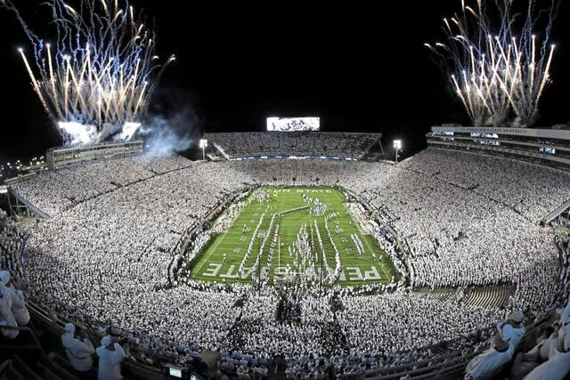

Stadiums in college football are a huge deal and sometimes are one of the most recognizable aspects about a team. Stadiums can be on campus or off campus, but when they are on campus it seems like it is the heart and soul of a college campus. The biggest stadiums in college football can hold over 100,000 people. The loudest games can reach up to 130 decibels which as loud as a gunshot at close range.
Every Saturday (and sometimes other days of the week) fans travel across the country to watch their favorite teams play at their stadium. The students, the fans locally, and the fans that traveled come together outside the stadium to tailgate these football games. The stadium ultimately comes host to an all day event regardless of the time of the game. When it is finally gametime tens of thousands of fans walk into the packed stadium to watch their team play in one of the loudest environments in the world.
| Stadium | Capacity |
|---|---|
| Michigan Stadium | 107,601 |
| Beaver Stadium | 106,572 |
| Ohio Stadium | 102,780 |
| Kyle Field | 102,733 |
| Tiger Stadium | 102,321 |